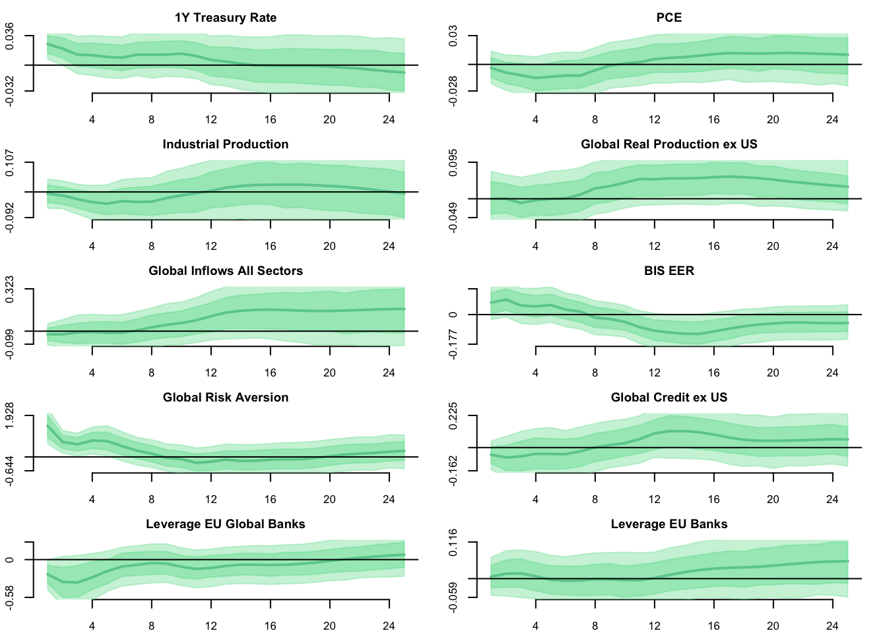

An U.S. Transmission Model Reproduction
Abstract. This study tries to replicate Miranda-Agrippino,Rey(2020) implementing the framework of Møller,Wolf(2021). We implement a Bayesian SVAR and study the causality of our variables implementing Impulse Response Functions and Forecast Error Variance Decompositions.
Keywords. Monetary Policy, US transmission mechanism, Bayesian SVAR
Introduction
We replicate Miranda-Agrippino and Rey (2020), Review of Economic Studies, implementing an original approach developed by Plagborg-Moller (2021). The former authors jointly evaluate the effects of financial, monetary and real variables, in the U.S. and abroad, following a 1% shock of the Federal Reserve (FED) interest rate. In particular, the authors rely on an instrumental variable to identify U.S. monetary policy shocks. This is to avoid implausible restrictions on their variable of interest. Our task will be to understand the model of these two scholars and replicate it with simplifications. This is given the time scope of the Macroeconometrics course taught by Dr. Tomasz Woźniak. The specific challenge will be to adapt the Macroeconometrics R functions provided by the Lecturer and write R codes to disentangle the authors’ framework.
The Paper
Global Factor in Risky Asset Prices
Miranda-Agrippino and Rey in the first part of the paper estimate a global factor to proxy the movement of world risky asset prices. They do so by collecting 858 prices of different risky assets traded in North America, Latin America, Europe, Asia Pacific, and Australia, from 1990 to 2012. Their method is to pick a representative market index (i.e. S&P 500) for each market at the end of 2012, including all of its components, selecting prices that allow them to cover at least 80% of cross sectional observations by 1990 and 95% in 1995. They do so to avoid over-representation of each category. They use the first difference log-priced series. With this global factor, they can explain over 20% of global risky asset price volatility in their time span. Given the small time frame and VAR analysis limitations, they estimate a global factor with commodities from the U.S., Europe, and Japan, spanning back to 1975. This factor covers 60% of the volatility in this period. The appendix of the paper provides detailed information on this VAR estimation. To provide more intuition on this factor, the authors correlate it with some implied indexes volatility such as the VIX, outlining its co-movement with common measures of market variation (in this case a negative correlation). The global factor will be used later in the impulse-response section.
Data Initialization
##########################################################################################
library(readxl)
library(ggplot2)
library(rmarkdown)
library(matrixcalc)
library(mvtnorm)
library(parallel)
library(fredr)
library(sovereign)
library(MASS)
library(patchwork)
library(fredr)
library(mgcv)
library(HDInterval)
library(nlme)
library(mgcv)
##########################################################################################
url <- "http://silviamirandaagrippino.com/s/DFM-Blocks.zip"
download.file(url, "MAR(2020)")
unzip("MAR(2020)")
data <- read_excel("GFC_VARdata+WEB.xlsx", skip=1, .name_repair = "unique_quiet")
inst <- read_excel("GFC_VARdata+WEB.xlsx", sheet = 2, skip=1, .name_repair = "unique_quiet")
#date = ts(seq(from = as.Date("1980-01-01"), to = as.Date("2012-12-01"), by = 'month'))
#instrument$LABEL <- date #ts object is not able to translate dates
gf <- read_excel("GFC_VARdata+WEB.xlsx", sheet= 4, skip=2, .name_repair = "unique_quiet", na = "blank")
#time series of variables
#fed = ts((fed[,3]), start=c(1980,1), frequency=12) #FED federal funds rate
instrument = ts((inst$FF4), start=c(1980,1), frequency=12) #FFF4 instrument
indpro = ts((data$INDPRO), start=c(1980,1), frequency=12) #industrial production
greaexus = ts((data$GREAEXUS), start=c(1980,1), frequency=12) #Global Real Economic Activity Ex US
glbinflows = ts((data$GLBINFLALL), start=c(1980,1), frequency=12) #Global Inflows All Sectors
dgs1 = ts((data$DGS1), start=c(1980,1), frequency=12) #1 Year Treasury Rate
pce = ts((data$PCEPI), start=c(1980,1), frequency=12) #PCE Deflator;
bis = ts((data$BISREER), start=c(1980,1), frequency=12) #BIS real EER
globalf = ts((data$GLOBALF), start=c(1980,1), frequency=12) #Global Factor
globalra = ts((data$GLOBALRA), start=c(1980,1), frequency=12) #Global Risk Aversion
glbcrexus = ts((data$GLBCREXUS), start=c(1980,1), frequency=12) #Global Domestic Credit ex US
usbdlev = ts((data$USBDLEV), start=c(1980,1), frequency=12) #Leverage US Brokers and Dealers
eubdlev = ts((data$EUBDLEV), start=c(1980,1), frequency=12) #Leverage EU Global Banks
usbanksl = ts((data$USBANKSL), start=c(1980,1), frequency=12) #Leverage US Banks
eubanksl = ts((data$EUBANKSL), start=c(1980,1), frequency=12) #Leverage EU Banks
#create the bigy matrix with our data
y = cbind(instrument,
dgs1,
(pce),
(indpro),
(greaexus),
(glbinflows),
(bis),
globalf,
globalra,
(glbcrexus),
(usbdlev),
(eubdlev),
(usbanksl),
(eubanksl))
y.names= cbind("FF4 Instrument",
"1Y Treasury Rate",
"PCE",
"Industrial Production",
"Global Real Production ex US",
"Global Inflows All Sectors",
"BIS EER",
"Global Factor",
"Global Risk Aversion",
"Global Credit ex US",
"Leverage US Brokers & Dealers",
"Leverage EU Global Banks",
"Leverage US Banks",
"Leverage EU Banks")
#data in selected window
y <- window((y), start=c(1990,2), end=c(2010,12))Global Factors Plot
ggplot() +
geom_line(data = gf, aes(x = `...1`, y = `GLOBAL FACTOR 1975-2010`, linetype = "GF 1975-2010"), color ="blue", na.rm = TRUE, linewidth=1.2) +
geom_line(data = gf, aes(x = `...1`, y = `GLOBAL FACTOR 1990-2012`, linetype = "GF 1990-2012"), color="purple", na.rm = TRUE, linewidth=1.2) +
geom_line(data = data, aes(x = `LABEL`, y = VIX, linetype = "VIX"), color="black", na.rm = TRUE, linewidth=1.2) +
scale_linetype_manual(values = c("solid", "solid", "solid"),
labels = c("VIX", "GF 1975-2010", "GF 1990-2012"),
guide = guide_legend(override.aes = list(color = c("black", "blue", "purple")))) +
labs(x = "", y = "", title = "Global Factor for Risky Asset Prices") +
theme(plot.title = element_text(size = 20)) +
theme(legend.text = element_text(size = 20), legend.title = element_text(size = 0),
legend.position = "bottom", plot.title = element_text(hjust = 0.5),
panel.border = element_blank(), panel.grid.major = element_blank(),
panel.grid.minor = element_blank(), axis.line = element_line(colour = "black"),
panel.background = element_rect(fill = "white"), plot.background = element_rect(fill = "white"),
axis.text = element_text(size = 14))
Proxy-VAR Analysis with Rich-Information Bayesian VAR
In this project, we will avoid the computation of the global factor, because it is out of scope of the Macroeconomerics subject. Instead, we will concentrate on the Bayesian VAR analysis of Miranda-Agrippino and Rey. A main reason why the authors studied the monetary effects of U.S. interest rate changes is that the dollar is the currency of global banking. A change in FED monetary policy affects banks’ borrowing capacity, the pricing of dollar denominated assets, and cross-border capital flows. In order to isolate its effects, the two scholars identify U.S. monetary policy shocks by exploiting 30-min price revisions around Federal Open Market Committee (FOMC) announcements in the fourth federal funds futures contracts (FF4). The intuition is that these futures have an average maturity of three months, and they can predict revisions of market expectations about future monetary policy one-quarter in advance. This assumption holds only if market participants can distinguish between the systematic component of policy and any observable policy action. Moreover, with asymmetrical information, the FF4 revisions contain information about the influence of economic factors relevant to U.S. monetary policy. Policy announcements provide this information implicitly.
The Data
We download the data directly from the website of Miranda-Agrippino. The two authors study the consequences of a 1% increase in the U.S. monetary policy considering: -a domestic VAR with the effects on domestic financial markets and macroeconomic aggregates in the United States; -a global VAR with the effects on global asset markets, global domestic credit and international capital flows; -a “floaters” VAR to study if a fixed or pegged exchange rate affects the global contraction.
We will study the global specifications, and include the following variables:
Data Plots
library(ggplot2)
library(patchwork)
############################################################
############################################################
fed.gdp.plot <- (ggplot(data=data) +
geom_line(aes(x = `LABEL`, y = `DGS1`, linetype = "solid"), na.rm = TRUE, color = "blue")
+ geom_line(aes(x = `LABEL`, y = `GREAEXUS`, linetype = "dashed"), na.rm = TRUE, color = "black")+
scale_linetype_manual(values=c("solid", "dashed"), name="", labels=c("Global Real Economic Activity Ex US", "1 Year Treasury Rate"), guide = guide_legend(override.aes = list(color = c("blue", "black")), nrow=2)) +
guides(linetype = guide_legend(override.aes = list(color = c("black", "blue")), nrow=2)) +
labs(x ="", y="", title= "Treasury Rate and Global \nReal Activity Index") +
theme(legend.text = element_text(size=6),legend.title = element_text(size=5, face="bold"), legend.position = "bottom", plot.title = element_text(hjust = 0.5, size=11), panel.border = element_blank(), panel.grid.major = element_blank(),
panel.grid.minor = element_blank(), axis.line = element_line(colour = "black"),panel.background = element_rect(fill = "white"),
plot.background = element_rect(fill = "white"), axis.text =element_text(size = 10)))
############################################################
############################################################
pce.plot <- (ggplot(data=data) +
geom_line(aes(x = `LABEL`, y = PCEPI, linetype = "solid"), na.rm = TRUE, color = "blue") +
scale_linetype_manual(values=c("solid"), name="", labels=c("PCE Deflator"), guide = guide_legend(override.aes = list(color = c("blue")))) +
guides(linetype = guide_legend(override.aes = list(color = c("blue")))) +
labs(x ="", y="", title= "Price Deflator") +
theme(legend.text = element_text(size=10),legend.title = element_text(size=16, face="bold"), legend.position = "bottom", plot.title = element_text(hjust = 0.5), panel.border = element_blank(), panel.grid.major = element_blank(),
panel.grid.minor = element_blank(), axis.line = element_line(colour = "black"),panel.background = element_rect(fill = "white"),
plot.background = element_rect(fill = "white"), axis.text = element_text(size = 10)))
############################################################
############################################################
leverage.plot <- (ggplot(data=data) +
geom_line(aes(x = `LABEL`, y = EUBDLEV, linetype = "solid"), na.rm = TRUE, color = "blue", linewidth=1.1) +
geom_line(aes(x = `LABEL`, y = USBANKSL, linetype = "dashed"), na.rm = TRUE, color = "black", linewidth=1.1) +
geom_line(aes(x = `LABEL`, y = EUBANKSL, linetype = "twodash"), na.rm = TRUE, color = "purple", linewidth=1.1) +
geom_line(aes(x = `LABEL`, y = USBDLEV, linetype = "dotted"), na.rm = TRUE, color = "violet", linewidth=1.1) +
scale_linetype_manual(values=c("solid", "dashed", "twodash", "dotted"), name="", labels=c("Leverage EU Banks", "Leverage EU Global Banks", "Leverage US Banks", "Leverage US Brokers and Dealers"), guide = guide_legend(override.aes = list(color = c("blue", "black", "purple", "violet")))) +
guides(linetype = guide_legend(override.aes = list(color = c("black", "blue", "purple", "violet")))) +
labs(x ="", y="", title= "Leverage") +
theme(legend.text = element_text(size=7),legend.title = element_text(size=16, face="bold"), legend.position = "bottom", plot.title = element_text(hjust = 0.5), panel.border = element_blank(), panel.grid.major = element_blank(),
panel.grid.minor = element_blank(), axis.line = element_line(colour = "black"),panel.background = element_rect(fill = "white"),
plot.background = element_rect(fill = "white"), axis.text = element_text(size = 10)))
############################################################
############################################################
mixed.types.plot <- (ggplot(data=data) +
geom_line(aes(x = `LABEL`, y = GLBINFLALL, linetype = "solid"), na.rm = TRUE, color = "blue", linewidth=1.1) +
geom_line(aes(x = `LABEL`, y = INDPRO, linetype = "dashed"), na.rm = TRUE, color = "black", linewidth=1.1) +
geom_line(aes(x = `LABEL`, y = GLBCREDIT, linetype = "twodash"), na.rm = TRUE, color = "purple", linewidth=1.1) +
geom_line(aes(x = `LABEL`, y = BISREER, linetype = "dotted"), na.rm = TRUE, color = "violet", linewidth=1.1) +
scale_linetype_manual(values=c("solid", "dashed", "twodash", "dotted"), name="", labels=c("Industrial Production","Global Inflows All Sectors", "Global Domestic Credit", "BIS real EER"), guide = guide_legend(override.aes = list(color = c("blue", "black", "purple", "violet")))) +
guides(linetype = guide_legend(override.aes = list(color = c("black", "blue", "purple", "violet")))) +
labs(x ="", y="", title= "Production, Inflows, Credit, BIS REER") +
theme(legend.text = element_text(size=8),legend.title = element_text(size=16, face="bold"), legend.position = "bottom", plot.title = element_text(hjust = 0.5), panel.border = element_blank(), panel.grid.major = element_blank(),
panel.grid.minor = element_blank(), axis.line = element_line(colour = "black"),panel.background = element_rect(fill = "white"),
plot.background = element_rect(fill = "white"), axis.text = element_text(size = 10)))
############################################################
############################################################
risk.types.plot <- (ggplot(data=data) +
geom_line(aes(x = `LABEL`, y = GLOBALF, linetype = "solid"), na.rm = TRUE, color = "blue") +
geom_line(aes(x = `LABEL`, y = GLOBALRA, linetype = "dashed"), na.rm = TRUE, color = "black") +
scale_linetype_manual(values=c("solid", "dashed"), name="", labels=c("Global Risk Aversion", "Global Factor"), guide = guide_legend(override.aes = list(color = c("black", "blue")), nrow=2)) +
labs(x ="", y="", title= "Risk Aversion") +
theme(legend.text = element_text(size=9),legend.title = element_text(size=16, face="bold"), legend.position = "bottom", plot.title = element_text(hjust = 0.5), panel.border = element_blank(), panel.grid.major = element_blank(),
panel.grid.minor = element_blank(), axis.line = element_line(colour = "black"),panel.background = element_rect(fill = "white"),
plot.background = element_rect(fill = "white"), axis.text = element_text(size = 10)))
############################################################
############################################################
library(patchwork)
combinedplot.1 <- mixed.types.plot / leverage.plot
combinedplot.2 <- fed.gdp.plot + risk.types.plot + pce.plot
combinedplot.1
combinedplot.2

Data Description
Against this framework, our interest is to study the degree by which U.S. monetary policy shocks can propagate throughout the world’s economies. In order to have a global picture we study macroeconomic variables that can affect and influence a FED change in the interest rate. The global variables are constructed by scrutinizing these countries: Argentina, Australia, Austria, Belarus, Belgium, Bolivia, Brazil, Bulgaria, Canada, Chile, Colombia, Costa Rica, Croatia, Cyprus, Czech Republic, Denmark, Ecuador, Finland, France, Germany, Greece, Hong Kong, Hungary, Iceland, Indonesia, Ireland, Italy, Japan, Latvia, Lithuania, Luxembourg, Malaysia, Malta, Mexico, Netherlands, New Zealand, Norway, Poland, Portugal, Romania, Russia, Serbia, Singapore, Slovakia, Slovenia, South Africa, South Korea, Spain, Sweden, Switzerland, Thailand, Turkey, U.K., and the U.S.
As discussed in the previous section, we are including the variables of the global VAR of Miranda-Agrippino and Rey (2020). In the first graph, we include the following variables: the U.S. industrial production index that measures the real output of all relevant establishments located in the U.S.; the Bank for International Settlement (BIS) effective exchange rate (EER) for the United States, i.e. a summary measure calculated by the BIS to account for changes in the U.S. bilateral exchange rate against other countries by their trade importance; global inflows, defined as direct cross-border credit flows from the U.S. to the aforementioned countries’ banks and non-bank recipients. This variable is key to explaining the degree of financial dependency of the rest of the world vis-à-vis the financial hegemon; global domestic credit, another key variable in our VAR that outlines the total amount of funds in the world economy, including loans, debt instruments, and other forms of credit provided by financial institutions.
In the second graph, we outline four types of leverage. First of all, leverage can be defined as the ratio between assets and equity, with equity being the difference between assets and debts. In finance, this measurement refers to the use of borrowed funds to finance assets or investments. Against this backdrop, the authors construct this variable as the ratio between claims in the private sector, i.e. credit extended by banks and other financial institutions to the private sector, and the sum of transferable deposits held by depository corporations, excluding central banks. This ratio reflects the proportion of credit extended to the private sector relative to deposits held by depository corporations, excluding central banks. A higher ratio suggests a higher banking leverage level. The authors differentiate between different leverages given financial agents’ risk-taking behavior. As a matter of fact, we can observe that the leverage between EU global banks and US brokers and dealers is much larger than the leverage of big but not systemic EU and US banks. EU global banks include systematically important banks such as UBS and Unicredit. Global banks’ leverage is high for several reasons such as size and risk appetite. Brokers and dealers’ behavior can be explained by their risk-loving approach.
In the third graph, we include the FED policy rate coupled with the global real economic activity index (excluding the US). We can observe the lag effect of an increase in interest rates with a decrease in international economic activity. In the fourth graph we include the global factor discussed in the previous section, plotted with global risk aversion (one variable is the inverse of the other). The factor is rotated to provide an intuitive view that an increase in the factor (risk aversion) reflects an increase in world asset prices. Lastly, we plot the U.S. PCE deflator to measure changes in goods and services prices over time.
Lastly, we will add the aforementioned instrument on top of the \(y_t\) variable. In the next section we will provide the reason for this procedure.
Order of Integration of the Variables
We run an augmented Dickey Fuller (ADF) test to determine the order of integration of our variables. The test rejects the null hypothesis that the variables are unit-root except for our instrument variable as expected. In order to provide more insight into the order of integration we re-run an ADF test with the first difference of the variables.
ADF-tests
library(tseries)
adf <- as.data.frame(matrix(nrow=14,ncol=3,NA))
rownames(adf) <- colnames(y[1:14])
colnames(adf) <- c("Dickey-Fuller","Lag", "p-value")
for (i in 1:ncol(y)){
adf_tmp <- adf.test(y[,i])
adf[i,"Dickey-Fuller"] <- round(as.numeric(adf_tmp[1]),3)
adf[i,"Lag"] <- as.numeric(adf_tmp[2])
adf[i,"p-value"] <- round(as.numeric(adf_tmp[4]),3)
}
adf.diff <- as.data.frame(matrix(nrow=14,ncol=3,NA))
rownames(adf.diff) <- colnames(y[1:14])
colnames(adf.diff) <- c("Dickey-Fuller diff","Lag diff", "p-value diff")
for (i in 1: ncol(y)){
tmp.diff <- adf.test(diff(y[,i]))
adf.diff[i,"Dickey-Fuller diff"] <- round(as.numeric(tmp.diff[1]),3)
adf.diff[i,"Lag diff"] <- as.numeric(tmp.diff[2])
adf.diff[i,"p-value diff"] <- round(as.numeric(tmp.diff[4]),3)
}
tab = cbind(t(y.names),adf, adf.diff)
colnames(tab)[1] <- "Variable Names"
knitr::kable(tab, index=TRUE)| Variable Names | Dickey-Fuller | Lag | p-value | Dickey-Fuller diff | Lag diff | p-value diff |
|---|---|---|---|---|---|---|
| FF4 Instrument | -4.492 | 6 | 0.010 | -10.666 | 6 | 0.01 |
| 1Y Treasury Rate | -2.612 | 6 | 0.318 | -4.047 | 6 | 0.01 |
| PCE | -2.349 | 6 | 0.429 | -6.200 | 6 | 0.01 |
| Industrial Production | -1.692 | 6 | 0.706 | -4.354 | 6 | 0.01 |
| Global Real Production ex US | -3.305 | 6 | 0.071 | -5.053 | 6 | 0.01 |
| Global Inflows All Sectors | -2.032 | 6 | 0.562 | -4.474 | 6 | 0.01 |
| BIS EER | -1.425 | 6 | 0.818 | -7.129 | 6 | 0.01 |
| Global Factor | -2.031 | 6 | 0.563 | -7.166 | 6 | 0.01 |
| Global Risk Aversion | -1.857 | 6 | 0.636 | -6.564 | 6 | 0.01 |
| Global Credit ex US | -1.520 | 6 | 0.778 | -5.558 | 6 | 0.01 |
| Leverage US Brokers & Dealers | -2.699 | 6 | 0.282 | -5.411 | 6 | 0.01 |
| Leverage EU Global Banks | -3.276 | 6 | 0.076 | -5.696 | 6 | 0.01 |
| Leverage US Banks | -1.529 | 6 | 0.774 | -5.348 | 6 | 0.01 |
| Leverage EU Banks | -1.637 | 6 | 0.729 | -6.037 | 6 | 0.01 |
The Model
BVAR Framework
From Herwartz (2021) we define the model as: \[ y_t=B_0B_1y_{t-1}+...+B_0B_py_{t-p}+B_0\varepsilon_t, t=1,..,T \] \[y_t=A_1y_{t-1}+...+A_py_{t-p}+u_t\] where \(A_j, : \left \{j=1,2,\dots,p\right \}\) where \(A(L)=B_0B(L)\) are a K x K coefficient matrices, and L is the lag operator, and \(u_t\) in the first reduced form is serially uncorrelated with zero mean and positive definite (non-diagonal) covariance matrix \(\Sigma_u.\) The structural shocks \(\varepsilon_t\) in the second reduced form are assumed to be mutually uncorrelated and normalised to have unit variance. \(\Xi\left(\varepsilon_t \varepsilon_t' \right)=I_K\). Structural shocks are mapped to the reduced-form system through a K x K non-singular matrix \(B_0\), such that \(B_0^{-1}B_0^{-1'}=\Sigma_u\). For simplicity, the process is assumed to be causal and \(\det A(z)=\det(I_k-\sum_{j=1}^{p}A_jz^{j})\neq 0\) for \(\left| z \right|\le 1\). This ensures that the process has a Wold moving average MA representation. Moreover,
\[\begin{align*} y_t=\mu+\sum_{i=0}^{\infty}\Phi_iu_{t-i}=\mu+\sum_{i=0}^{\infty}\Phi_iB_0\varepsilon_{t-i}= \mu+\sum_{i=0}^{\infty}\Theta_i\varepsilon_{t-i}. \end{align*}\]With: \[\begin{gather} \mu=A(1)^{-1}\nu, ::: \Phi_0=I_K, \ \Phi_i=\sum_{j=1}^{i}A_j\Phi_{i-j}, ::: A_j=0 :for: j>p. \end{gather}\] The second to last MA representation is of particular importance because the structural MA coefficients \(\Theta_i=\Phi_iB_0\) cannot be recovered without a proper identification. We will briefly outline the Proxy SVAR approach.
Let \(z_t\) be an external instrument to identify the structural shock of interest \(\varepsilon_{kt}, k\:\epsilon \: \left \{1,\dots, K\right \}\). \(z_t\) has to satisfy the relevant condition \(\Xi(\varepsilon_{kt}z_t)=\phi \neq 0\) and the exogeneity condition \(\Xi(\varepsilon{lt}z_t)=0, \forall l\:\epsilon\left \{1,\dots, K\right \}\setminus\left \{k\right \}\).
From these conditions, it follows that the population covariance between the instrument and VAR residuals obtain the k-th column if \(B_0\), denoted by \(B_{0k}\). \end{gather} The second to last MA representation is of particular importance because the structural MA coefficients \(\Theta_i=\Phi_iB_0\) cannot be recovered without a proper identification. We will briefly outline the Proxy SVAR approach. Let \(z_t\) be an external instrument to identify the structural shock of interest \(\varepsilon_{kt}, k\:\epsilon \: \left \{1,\dots, K\right \}\). \(z_t\) has to satisfy the relevant condition \(\Xi(\varepsilon_{kt}z_t)=\phi \neq 0\) and the exogeneity condition \(\Xi(\varepsilon{lt}z_t)=0, \forall l\:\epsilon\left \{1,\dots, K\right \}\setminus\left \{k\right \}\). From these conditions, it follows that the population covariance between the instrument and VAR residuals obtains the k-th column of \(B_0\), denoted by \(B_{0k}\).
\[ \Xi(u_tz_t) = B_{0,k} \\ \Xi(\varepsilon{kt}z_t)=\phi B_{0,k} \] Moreover, let \(\Pi\) denotes the \(1\)x\(K\) coefficient vector from the regression of the instrument on the residual vector \(u_t\) gives the shock \(\varepsilon_{kt}\) up to a scale \(\phi\). \(\Pi u_t=\Xi(z_tu^{'}_t)\Sigma_{u}^{-1}u_t=\phi B^{'}_{0,k}\left [B_0B_0^{'} \right ]u_t=\phi e^{'}_t\varepsilon_{kt}\) Plagborg-Moller (2021), exploiting their result that Local Projections and VAR impulse response function are equal up to a constant of proportionality, show that proxy SVARS impulse responses can be computed putting the instrument in the first row of the data vector \(y_t\) in a SVAR framework. This result follows from the invertibility of \(\varepsilon\) and two assumptions: -the data \(y_t\) is covariance-stationary; -the data \(y_t\) is a jointly Gaussian vector time series.
In our Bayesian approach these requirements are met when we define the distributions of our error terms and prior specifications. We will outline them in the next section.
Basic Model
We specify our model to follow a matrix-variate normal distribution \[\begin{gather} Y = XA + E \\ \\ E|X \sim MN_{T \times N}(0_{T \times N},\Sigma,I_T) \end{gather}\] Given that the function Y is a linear combination of the error terms E, we can specify \[\begin{gather} Y|X,A,\sim MN_{T \times N}(XA,\Sigma,I_T) \end{gather}\] Hence, the Likelihood function follows a Matrix-Variate-Normal form: \[\begin{gather} L(A,\Sigma|Y,X) \propto \det(\Sigma)^{-\frac{T}{2}} exp \left\{-\frac{1}{2} tr \left[ \Sigma^{-1}(Y-XA)'(Y-XA) \right] \right\} \\ \\ \propto \det(\Sigma)^{-\frac{T}{2}} exp \left\{-\frac{1}{2} tr \left[ \Sigma^{-1}(A-\hat{A})'X'X(A-\hat{A}) \right] \right\} exp \left\{-\frac{1}{2} tr \left[\Sigma^{-1}(Y-X \hat{A})'(Y-X \hat{A}) \right] \right\} \\ \end{gather}\] where from Maximum Likelihood Estimation we have obtained \[\begin{gather} \hat{A} = (X'X)^{-1}X'Y \\ \\ \hat{\Sigma} = \frac{1}{T} (Y-X \hat{A})'(Y-X \hat{A}) \end{gather}\] In the basic model, our prior follows a natural-conjugate prior distribution of the same form: \[\begin{gather} p(A,\Sigma) = p(A|\Sigma) p(\Sigma) \\ \\ A|\Sigma \sim MN_{K \times N} (\underline{A}, \Sigma , \underline{V}) \\ \\ \Sigma \sim IW_{N}(\underline{S},\underline{\nu}) \end{gather}\]
With parameters: \[\begin{gather} \underline{A} = [0_{N \times 1} \quad I_N \quad 0_{N \times (p-1)N}]' \\ \\ Var[vec(A)] = \Sigma \otimes \underline{V} \\ \\ \underline{V} = diag([\kappa_2 \quad \kappa_1 (p^{-2} \otimes I_N)]) \\ \\ p = [1,2,...p] \end{gather}\] \(\kappa_2\) and \(\kappa_1\) describe, respectively, the priors of the overall shrinkage level of the constant term and the variance-covariance matrix of the autoregressive slopes for the constant term. We specify \(\kappa_2=1\) and \(\kappa_1=0.02\) to respect Plagborg-Moller (2021) assumptions. We would not expect persistence in each lag for stationary variables following a random walk. Moreover, we set the prior of the autoregressive parameters \(A\) equal to a vector of zeros. The resulting full conditional posterior is: \[\begin{gather} p(A,\Sigma|Y,X) = p(A|Y,X,\Sigma)p(\Sigma|Y,X) \\ \\ p(A|Y,X,\Sigma) = MN_{K \times N}(\bar{A}, \Sigma, \bar{V}) \\ \\ p(\Sigma | Y, X) = IW_N(\bar{S},\bar{\nu}) \end{gather}\]
We can derive the full conditional posterior: \[\begin{gather} P(A,\Sigma|Y,X) \propto L(A,\Sigma|Y,X)p(A,\Sigma) \\ \\ \propto L(A,\Sigma|Y,X)p(A|\Sigma)p(\Sigma) \\ \\ \det(\Sigma)^{-\frac{T}{2}} \times exp \left\{-\frac{1}{2} tr \left[ \Sigma^{-1}(A-\hat{A})' X'X (A-\hat{A})\right] \right\} \\ \\ \times exp\left\{-\frac{1}{2}tr \left[ \Sigma^{-1}(Y-X\hat{A})'(Y-X\hat{A}) \right] \right\} \\ \\ \times \det(\Sigma)^{-\frac{N+K+\underline{\nu}+1}{2}} \\ \\ \times exp\left\{-\frac{1}{2}tr \left[ \Sigma^{-1}(A- \underline{A})'\underline{V}^{-1}(A- \underline{A}) \right] \right\} \\ \\ \times exp \left\{ -\frac{1}{2} tr \left[ \Sigma^{-1} \underline{S} \right] \right\} \end{gather}\]
After some calculations:
\[\begin{gather}\\ p(A,\Sigma|Y,X) \propto \\ \\ \det{(\Sigma)}^{-\frac{T+N+K+ \underline{\nu} +1}{2}} \times exp\left\{ -\frac{1}{2} tr \left[ \Sigma^{-1} \left[ (A-\bar{A})^{'} \bar{V}^{-1} (A-\bar{A})+\underline{S} +Y^{'}Y + \underline{A}^{'} \underline{V}^{-1}\underline{A} -\bar{A}^{'} \bar{V}^{-1}\bar{A}\right]\right]\right\} \end{gather}\]where the full conditional posterior has the same natural-conjugate form of our prior:
\[\begin{gather} p(A,\Sigma|Y,X) = p(A|Y,X,\Sigma)p(\Sigma|Y,X) \\ \\ p(A|Y,X,\Sigma) = MN_{K \times N}(\bar{A}, \Sigma, \bar{V}) \\ \\ p(\Sigma | Y, X) = IW_N(\bar{S},\bar{\nu})\end{gather}\]with posterior parameters:
\[\begin{gather} \bar{V} = (X^{'}X+ \underline{V}^{-1})^{-1} \\ \\ \bar{A} = \bar{V}(X^{'}Y+\underline{V}^{-1} \underline{A}) \\ \\ \bar{\nu} = T + \underline{\nu} \\ \\ \bar{S} = \underline{S} + Y^{'}Y + \underline{A}^{'}\underline{V}^{-1}\underline{A} - \bar{A}^{'}\bar{V}^{-1}\bar{A} \end{gather}\]In order to compute our posterior parameters in R, we first specify values for our priors, then calculate the posteriors and draw \(A\) and \(\Sigma\) respectively from Matrix-Variate-normal and Inverse Wishart distributions. At this point, we can obtain our structural parameters through a Cholesky decomposition of our matrix \(\Sigma\), namely with \(\Sigma^{-1}=(B_0B_0^{'})\).
Basic Model Function
basic.model <- function(bigy, p, S, start, end){
############################################################
N = ncol(bigy)
K = 1+N*p
############################################################
Y = bigy[(p+1):nrow(bigy),]
X = matrix(1,nrow(Y),1)
for (i in 1:p){
X = cbind(X,bigy[(p+1):nrow(bigy)-i,])
}
A.prior = matrix(0,K,N)
A.prior[2:(N+1),] <- diag(c(0,rep(1,N-1))) #0 for the instrument (stationary variable)
V.prior = (diag(c(1,0.02*((1:p)^(-2))%x%rep(1,N)))) #1 is kappa.2, 0.02 is kappa.1
S.prior = diag(N)
nu.prior = N+1
# normal-inverse Wishart posterior parameters
############################################################
V.bar.inv = t(X)%*%X + diag(1/diag(V.prior)) #X'X+diag(V^-1)
V.bar = solve(V.bar.inv) #inv(X'X+diag(V^-1))
A.bar = V.bar%*%(t(X)%*%Y + diag(1/diag(V.prior))%*%A.prior)
nu.bar = nrow(Y) + nu.prior
S.bar = S.prior + t(Y)%*%Y + t(A.prior)%*%diag(1/diag(V.prior))%*%A.prior - t(A.bar)%*%V.bar.inv%*%A.bar
S.bar.inv = solve(S.bar)
# posterior draws
############################################################
Sigma.posterior = rWishart(S, df=nu.bar, Sigma=S.bar.inv)
Sigma.posterior = apply(Sigma.posterior,3,solve)
Sigma.posterior = array(Sigma.posterior,c(N,N,S))
A.posterior = array(rnorm(prod(c(dim(A.bar),S))),c(dim(A.bar),S)) #3 dimensional, S repetitions of rnorm
B.posterior = array(NA,c(N,N,S))
L = t(chol(V.bar))
for (s in 1:S){
cholSigma.s = chol(Sigma.posterior[,,s])
B.posterior[,,s]= t(cholSigma.s)
A.posterior[,,s]= A.bar + L%*%A.posterior[,,s]%*%cholSigma.s
}
#return the parameters of interest
results = list("B" = B.posterior, "A" = A.posterior, "Sigma" = Sigma.posterior)
return(results)
}Extended Model
In the extended model, we set hyperprior parameters for the autoregressive parameter \(\kappa_A\) to follow an Inverse Gamma 2 distribution \(IG2(\underline{S}_{\kappa},\underline{\nu}_{\kappa})\) and \(\kappa_{\Sigma}\) hyperprior parameter for the variance-covariance matrix to follow a Gamma Distribution \(G(\underline{S}_{\Sigma},\underline{a}_{\Sigma})\). We define a hierarchical model to provide flexibility to our model and hopefully reduce uncertainty. We will define the full conditional posterior of the hyperparameter \(\kappa_A\) first.
\[\begin{gather} p(\kappa_A | A,\Sigma, Y,X) \propto L(Y|X,A,\Sigma) \times p(\kappa_A) \times p(A|\Sigma,\kappa_A) \times p(\Sigma|\kappa_A) \\ \\ \propto p(\kappa_A) \times p(A|\Sigma,\kappa_A) \\ \\ \propto (\kappa_A)^{-\frac{\underline{\nu_a}_{\kappa_A}+2}{2}} exp\left\{ -\frac{1}{2} \frac{\underline{s_a}}{\kappa_A} \right\} \times exp\left\{-\frac{1}{2}tr\left[\Sigma^{-1}(A-\underline{A})^{'} \frac{1}{\kappa}(\underline{V_{\kappa}})^{-1} (A-\underline{A})\right]\right\} \times \det(\kappa_A \underline{V})^{-\frac{N}{2}} \\ \\ \propto (\kappa_A)^{-\frac{\underline{\nu_a}_{\kappa_A}+2+NK}{2}} exp \left\{-\frac{1}{2} \frac{1}{\kappa_A} \left[\underline{s_a}_{\kappa_A} + tr \left[\Sigma^{-1}(A-\underline{A})^{'}\underline{V}^{-1}(A-\underline{A}) \right]\right] \right\} \end{gather}\]where we recognise the kernel of an Inverse Gamma 2 Distribution with
\[\begin{gather} \bar{s}_a = \underline{s}_a+tr \left[ \Sigma^{-1} (A-\underline{A})^{'} \underline{V}^{-1} (A-\underline{A})\right] \\ \\ \bar{\nu}_a = \underline{\nu}_a+NK \end{gather}\]In addition, we obtain a similar full conditional posterior of the hyperparameter \(\kappa_{\Sigma}\). \[\begin{gather} p(\kappa_{\Sigma} | A,\Sigma, Y,X) \propto L(Y|X,A,\Sigma) \times p(\kappa_{\Sigma}) \times p(A|\Sigma,\kappa_A) \times p(\Sigma|\kappa_{\Sigma}) \times p(\kappa_A) \\ \\ \propto p(\kappa_{\Sigma}) \times p(\Sigma|\kappa_{\Sigma}) \\ \\ \propto (\kappa_{\Sigma})^{-\frac{\underline{\nu}N}{2}} exp\left[{ -\frac{1}{2} \frac{\kappa_{\Sigma}}{tr\left [\Sigma^{-1}\underline{s}_{\Sigma} \right ]^{-1}}} \right\} \times (\kappa_{\Sigma})^{\underline{a}_{\Sigma}-1}exp\left [{-\frac{\kappa_{\Sigma}}{\underline{s}_{\Sigma}}} \right ] \\ \\ \propto (\kappa_{\Sigma})^\frac{{}{N\underline{\nu}+2\underline{a}_{\Sigma}-2}}{2}exp\left [{-\frac{\kappa_{\Sigma}}{\left [2tr\left[\Sigma^{-1}\underline{s}_{\Sigma} \right ]^{-1}+\left[\underline{s}_{\Sigma} \right ]^{-1}\right ]^{-1}}} \right ] \\ \end{gather}\] where we can recognise the kernel of an Gamma Distribution with \[\begin{gather} \bar{s}_{\Sigma} = {\left [2\left[tr\Sigma^{-1}\underline{s}_{\Sigma} \right ]^{-1}+\left[\underline{s}_{\Sigma} \right ]^{-1}\right ]^{-1}} \\ \\ \bar{a}_{\Sigma} = \frac{N\underline{\nu}}{2}+\underline{a}_{\Sigma} \end{gather}\]
Therefore, our new full conditional posterior distribution will be as follows: \[\begin{gather} p(A,\Sigma|X,Y,\kappa_A,\kappa_{\Sigma}) \propto L(A,\Sigma|Y,X) \times p(A|\Sigma,\kappa_A) \times p(\Sigma|\kappa_{\Sigma}) \\ \\ \propto \det(\Sigma)^{-\frac{K}{2}} exp \left\{-\frac{1}{2}tr \left[ \Sigma^{-1}(Y-XA)^{'}(Y-XA)\right] \right\} \\ \\ \times exp \left\{ -\frac{1}{2} tr \left[ \Sigma^{-1}(A-\underline{A})^{'}(\kappa_A \underline{V})^{-1}(A-\underline{A}) \right] \right\} \\ \\ \times \det(\Sigma)^{\frac{\underline{\nu}+N+1}{2}} exp\left\{-\frac{1}{2} tr \left[\Sigma^{-1}\kappa_{\Sigma} \right] \right\} \end{gather}\]
We recognize the kernel of a matrix-normal inverse Wishart distribution, with parameters as follows: \[\begin{gather} \bar{V} = (X'X+(\kappa_A \underline{V}))^{-1} \\ \\ \bar{A} = \bar{V}(X'Y+(\kappa_A \underline{V}^{-1}\underline{A})) \\ \\ \bar{S} = I_N\kappa_{\Sigma}+Y'Y+\underline{A}^{'}(\kappa_A \underline{V})^{-1}\underline{A} - \bar{A}^{'} \bar{V}^{-1}\bar{A} \\ \\ \bar{\nu} = T + \underline{\nu} \end{gather}\]
Gibbs Sampler
In order to reach our analytical solutions we use a Monte Carlo Markov Chain (MCMC) method, namely the Gibbs Sampler procedure. We generate random draws from the joint posterior distribution and update them at each iteration to compute our posterior distribution parameters. In our case we exploit the following procedure: initialize \(\kappa_A\) and \(\kappa_{\Sigma}\) at \(\kappa_A^{(0)}\) and \(\kappa^{(0)}_{\Sigma}\).
At each iteration i:
- Draw \((A,\Sigma)^{(i)} \sim p(A,\Sigma\| X,Y,\kappa_A^{(i-1)}, \kappa_{\Sigma}^{(i-1)})\)
- Draw \(\kappa_A^{(i)} \sim p(\kappa_A|Y,X,A,\Sigma)\)
- Draw \(\kappa_{\Sigma}^{(i)} \sim p(\kappa_{\Sigma}|Y,X,A,\Sigma)\)
Repeat steps 1 and 2 for \((S_1 + S_2)\) times. Discard the first \(S_1\) repetitions. Return the output as \(\left \{ A^{(i)}, \Sigma^{(i)} \right \}^{S_2}_{i=S_1+1}\).
Extended Model Function 2
extended.model <- function(bigy, p, S1, S2){
############################################################
Y = bigy[(p+1):nrow(bigy),]
X = matrix(1,nrow(Y),1)
for (i in 1:p){
X = cbind(X,bigy[(p+1):nrow(bigy)-i,])
}
N = ncol(bigy)
K = 1+N*p
S=S1+S2 #sum of replications
# set the priors
A.prior = matrix(0,K,N) #try to put is as 0
#A.prior[2:(N+1),] <- diag(c(0,rep(1,N-1)))
V.prior = (diag(c(1,0.02*((1:p)^(-2))%x%rep(1,N)))) #1 is kappa.2, 0.02 is kappa.1
nu.prior = N+1
#kappa.a priors
nu.a.prior = 200 #ig2
s.a.prior = 100
#kappa.sigma priors
a.sigma.prior = 1 #rgamma
s.sigma.prior = 0.01
A.posterior = array(rnorm(prod(c(K,N,S))), c(K, N, S))
B.posterior = array(NA,c(N,N,S))
Sigma.post = array(NA,c(N,N,S))
k.sigma = matrix(NA, S, 1)
k.a = matrix(NA, S, 1)
k.sigma[1] <- 1
k.a[1] <- 1
nu.bar = nrow(Y) + nu.prior
nu.bar.a = nu.a.prior + N*K
a.sigma.bar = (N*nu.prior)/2+a.sigma.prior
for (s in 1:S) {
# normal-inverse Wishart, IG2, and Gamma posterior parameters
############################################################
V.bar.inv = t(X)%*%X + (k.a[s]^-1)*diag(1/diag(V.prior))
V.bar = solve(V.bar.inv)
A.bar = V.bar%*%(t(X)%*%Y + diag(1/diag(k.a[s]*V.prior))%*%A.prior)
S.bar = k.sigma[s]*diag(N) + t(Y)%*%Y + t(A.prior)%*%diag(1/diag(k.a[s]*V.prior))%*%A.prior - t(A.bar)%*%V.bar.inv%*%A.bar
S.bar.inv = solve(S.bar)
# posterior draws
############################################################
Sigma.posterior.inv = rWishart(1, df=nu.bar, Sigma=S.bar.inv)
Sigma.posterior = solve(Sigma.posterior.inv[,,1])
L = t(chol(V.bar))
cholSigma.s = chol(Sigma.posterior)
A.posterior[,,s] = A.bar + L%*%A.posterior[,,s]%*%cholSigma.s
s.a.bar <- s.a.prior + sum(diag(Sigma.posterior.inv[,,1] %*% t(A.posterior[,,s]-A.prior)%*% diag(1/diag(V.prior)) %*% (A.posterior[,,s]-A.prior)))
s.sigma.bar <- (2*(sum(diag(Sigma.posterior.inv[,,1]))^-1)+((s.sigma.prior)^-1))^-1
if (s <= S){
#draw k.a from IG2
k.a[s+1] <- s.a.bar / rchisq(1, df=nu.bar.a)
#draw k.sigma from gamma distribution
k.sigma[s+1] <- rgamma(1, shape = a.sigma.bar, scale = s.sigma.bar)
}
B.posterior[,,s] = t(chol(Sigma.posterior))
Sigma.post[,,s] = Sigma.posterior
}
#return the parameters of interest
results = list("B" = B.posterior[,,S1+1:S2],
"A" = A.posterior[,,S1+1:S2],
"Sigma" = Sigma.post[,,S1+1:S2],
"k.a" = k.a[S1+1:S2],
"k.sigma" = k.sigma[S1+1:S2],
"B.convergence" = B.posterior[,,1:S],
"A.convergence" = A.posterior[,,1:S],
"Sigma.convergence" = Sigma.post[,,1:S],
"k.a.convergence" = k.a[1:S],
"k.sigma.convergence" = k.sigma[1:S])
return(results)
}Stochastic Volatility Extension
We present an additional framework where we model the conditional heteroskedasticity of the error terms in our BSVAR. \[\begin{gather} Y = XA + E \\ \\ E|X \sim MN_{T \times N}(0_{T \times N},diag(\sigma^2)) \end{gather}\] where \[\sigma^2 = \left\{exp(h_1),...,exp(h_T) \right\}\] and each \(h\) is obtained from a Stochastic Volatility model \[\begin{gather} \tilde{y}=h+\tilde{\epsilon}\\ Hh=h_0e_{1.T}+\sigma_v v\\ \tilde{\epsilon}|s \sim \mathcal{N}_T(\mu_s,diag(\sigma^2_s))\\ v \sim \mathcal{N}_T(0_T,I_T)\\ \end{gather}\] where \(s\), \(\mu_s\), and \(\sigma_2^s\), are \(T\times1\) vectors. The hierarchical prior is given by \[p(h,s,h_0,\sigma^2_v)=p(h|h_0,\sigma^2_v)p(h0)p(\sigma^2_v)p(s)\] and the prior distribution of \(h|h_0,\sigma^2_v\) is given by \[p(h|h_0,\sigma^2_v) \sim \mathcal{N}_t(h0H^{-1}e_{1.T},\sigma^2_v(H'H)^{-1}) \propto \det (\sigma^2_v I_T)^{-\frac{1}{2}}exp \left \{-\frac{1}{2}\frac{1}{\sigma^2_v}(Hh-h_0e_{1.T})'(Hh-h_0e_{1.T}) \right \}\] and the marginal priors are \[p(h_0)=\mathcal{N}(0,\underline{\sigma}^2_h)\] \[p(\sigma^2_v)=\mathcal{IG2}(\underline{s},\underline{\nu})\] \[p(s_t)=\mathcal{Multinomial}({m}_{m=1}^10,{Pr(s_t=m)}_{m=1}^10)\] Combining the priors with the conditional likelihood \[exp\left \{ -\frac{1}{2}(h-(\tilde{y}-\mu_s)'diag(\sigma_s^2)^{-1}(h-(\tilde{y}-\mu_s)) \right \}\] we obtain the full conditional posterior of \(h|y,s,h_0,\sigma^2_v \sim \mathcal{N}_T(\bar{h}, \bar{V}_h)\) with parameters: \[\bar{H}_h= \left [ diag(\sigma_s^2)^{-1}+\sigma_v^{-2}H'H \right ]^{-1}\] \[\bar{h}=\bar{V}_h \left [diag(\sigma_s^2)^{-1}(\tilde{y}-\mu_s)+\sigma_v^{-2}h_0e_{1.T} \right ]\] In addition, incorporating the results from the posterior distributions of \(h\), \(s\), \(\sigma^2_v\), and \(h_0\), we obtain the updated parameters of the full conditional posterior of our Matrix-Variate-normal and Inverse Wishart distribution: \[\begin{gather} \bar{V} = (X'diag(h)^{-1}X+(\kappa_A \underline{V}))^{-1} \\ \\ \bar{A} = \bar{V}(X'diag(h)^{-1}Y+(\kappa_A \underline{V}^{-1}\underline{A})) \\ \\ \bar{S} = I_N\kappa_{\Sigma}+Y'diag(h)^{-1}Y+\underline{A}^{'}(\kappa_A \underline{V})^{-1}\underline{A} - \bar{A}^{'} \bar{V}^{-1}\bar{A} \\ \\ \bar{\nu} = T + \underline{\nu} \end{gather}\]
Based on the previous model, we can update the Gibbs sampler. Initialize \(\sigma^2\), \(\kappa_A\) and \(\kappa_{\Sigma}\) at \(\sigma^{2(0)}\) \(\kappa_A^{(0)}\) and \(\kappa^{(0)}_{\Sigma}\).
At each iteration i:
- Draw \((A,\Sigma)^{(i)} \sim p(A,\Sigma\| X,Y,\kappa_A^{(i-1)},\kappa_{\Sigma}^{(i-1)},\sigma^{2(i-1)})\)
- Draw \((\sigma^2)^{(i)} \sim p(h|y,s,h_0,\sigma^2_v)\)
- Draw \(\kappa_A^{(i)} \sim p(\kappa_A|Y,X,A^{(i)},\Sigma^{(i)})\)
- Draw \(\kappa_{\Sigma}^{(i)} \sim p(\kappa_{\Sigma}|Y,X,A^{(i)},\Sigma^{(i)})\)
Repeat steps 1 and 2 for \((S_1 + S_2)\) times. Discard the first \(S_1\) repetitions. Return the output as \(\left \{ A^{(i)}, \Sigma^{(i)} \right \}^{S_2}_{i=S_1+1}\). Unfortunately, we are still working on our Stochastic Volatility Model function and do not have the final result. We display the code below.
SV Model
SV.model <- function(bigy, p, S1, S2){
# ############################################################
SVcommon.Gibbs.iteration <- function(aux, priors){
# A single iteration of the Gibbs sampler for the SV component
# aux is a list containing:
# Y - a TxN matrix
# X - a TxK matrix
# H - a Tx1 matrix
# h0 - a scalar
# sigma.v2 - a scalar
# s - a Tx1 matrix
# A - a KxN matrix
# Sigma - an NxN matrix
# sigma2 - a Tx1 matrix
# priors is a list containing:
# h0.v - a positive scalar
# h0.m - a scalar
# sigmav.s - a positive scalar
# sigmav.nu - a positive scalar
# HH - a TxT matrix
T = dim(aux$Y)[1]
N = dim(aux$Y)[2]
alpha.st = c(1.92677,1.34744,0.73504,0.02266,0-0.85173,-1.97278,-3.46788,-5.55246,-8.68384,-14.65000)
sigma.st = c(0.11265,0.17788,0.26768,0.40611,0.62699,0.98583,1.57469,2.54498,4.16591,7.33342)
pi.st = c(0.00609,0.04775,0.13057,0.20674,0.22715,0.18842,0.12047,0.05591,0.01575,0.00115)
Lambda = solve(chol(aux$Sigma[,,s]))
Z = rowSums( ( aux$Y - aux$X %*% aux$A[,,s] ) %*% Lambda ) / sqrt(N)
Y.tilde = as.vector(log((Z + 0.0000001)^2))
Ytilde.alpha = as.matrix(Y.tilde - alpha.st[as.vector(aux$s[,s])])
# sampling initial condition
V.h0.bar = 1/((1 / priors$h0.v) + (1 / aux$sigma.v2[s]))
m.h0.bar = V.h0.bar*((priors$h0.m / priors$h0.v) + (aux$H[1,s] / aux$sigma.v2[s]))
h0.draw = rnorm(1, mean = m.h0.bar, sd = sqrt(V.h0.bar))
aux$h0[s] = h0.draw
# sampling sigma.v2
sigma.v2.s = priors$sigmav.s + sum(c(aux$H[1,s] - aux$h0, diff(aux$H[,s]))^2)
sigma.v2.draw = sigma.v2.s / rchisq(1, priors$sigmav.nu + T)
aux$sigma.v2[s] = sigma.v2.draw
# sampling auxiliary states
Pr.tmp = simplify2array(lapply(1:10,function(x){
dnorm(Y.tilde, mean = as.vector(aux$H[,s] + alpha.st[x]), sd = sqrt(sigma.st[x]), log = TRUE) + log(pi.st[x])
}))
Pr = t(apply(Pr.tmp, 1, function(x){exp(x - max(x)) / sum(exp(x - max(x)))}))
s.cum = t(apply(Pr, 1, cumsum))
r = matrix(rep(runif(T), 10), ncol = 10)
ss = apply(s.cum < r, 1, sum) + 1
aux$s[,s] = as.matrix(ss)
# sampling log-volatilities using functions for tridiagonal precision matrix
Sigma.s.inv = diag(1 / sigma.st[as.vector(aux$s[,s])])
D.inv = Sigma.s.inv + (1 / aux$sigma.v2[s]) * priors$HH
b = as.matrix(Ytilde.alpha / sigma.st[as.vector(aux$s[,s])] + (aux$h0[s]/aux$sigma.v2[s])*diag(T)[,1])
lead.diag = diag(D.inv)
sub.diag = mgcv::sdiag(D.inv, -1)
D.chol = mgcv::trichol(ld = lead.diag, sd = sub.diag)
D.L = diag(D.chol$ld)
mgcv::sdiag(D.L,-1) = D.chol$sd
x = as.matrix(rnorm(T))
a = forwardsolve(D.L, b)
draw = backsolve(t(D.L), a + x)
aux$H[,s] = as.matrix(draw)
aux$sigma2[,s] = as.matrix(exp(draw))
return(aux)
}
Y = bigy[(p+1):nrow(bigy),]
X = matrix(1,nrow(Y),1)
for (i in 1:p){
X = cbind(X,bigy[(p+1):nrow(bigy)-i,])
}
T = nrow(Y)
N = ncol(Y)
K = 1+N*p
S=S1+S2 #sum of replications
# set the priors
A.prior = matrix(0,K,N) #try to put is as 0
#A.prior[2:(N+1),] <- diag(c(0,rep(1,N-1)))
V.prior = (diag(c(1,0.02*((1:p)^(-2))%x%rep(1,N)))) #1 is kappa.2, 0.02 is kappa.1
nu.prior = N+1
#kappa.a priors
nu.a.prior = 200 #ig2
s.a.prior = 100
#kappa.sigma priors
a.sigma.prior = 10 #rgamma
s.sigma.prior = 0.5
k.sigma = matrix(NA, S, 1)
k.a = matrix(NA, S, 1)
k.sigma[1] <- 1
k.a[1] <- 1
nu.bar = nrow(Y) + nu.prior
nu.bar.a = nu.a.prior + N*K
a.sigma.bar = (N*nu.prior)/2+a.sigma.prior
HH <- 2*diag(T)
mgcv::sdiag(HH,-1) <- -1
mgcv::sdiag(HH,1) <- -1
H = matrix(1,T,S)
sdiag(H,-1) = -1
priors = list(HH = HH,
h0.m = 0,
h0.v = 1,
sigmav.s= 1,
sigmav.nu= 1
)
aux = list(
Y = Y,
X = X,
H = H,
h0 = matrix(0,S),
sigma.v2 = matrix(1,S),
s = matrix(1,T,S),
A = array(rnorm(prod(c(K,N,S))), c(K, N, S)),
B.post = array(NA,c(N,N,S)),
Sigma = array(NA,c(N,N,S)),
sigma2 = matrix(1,T,S)
)
# initial values draws
############################################################
V.bar.inv = t(X)%*%X + (k.a[1]^-1)*diag(1/diag(V.prior))
V.bar = solve(V.bar.inv)
A.bar = V.bar%*%(t(X)%*%Y + diag(1/diag(k.a[1]*V.prior))%*%A.prior)
S.bar = k.sigma[1]*diag(N) + t(Y)%*%Y + t(A.prior)%*%diag(1/diag(k.a[1]*V.prior))%*%A.prior - t(A.bar)%*%V.bar.inv%*%A.bar
S.bar.inv = solve(S.bar)
L = t(chol(V.bar))
Sigma.init = solve(rWishart(1, df=nu.bar, Sigma=S.bar.inv)[,,1])
cholSigma.s = chol(Sigma.init)
A.init = array(rnorm(prod(c(K,N))), c(K, N))
A.init. = A.bar + L%*%A.init%*%cholSigma.s
aux$A[,,1] <- A.init
aux$Sigma[,,1] <- Sigma.init
aux$B.post[,,1] <- t(chol(Sigma.init))
# Posterior draws with SV
############################################################
Sigma.post = array(NA,c(N,N,S))
A.posterior = array(rnorm(prod(c(K,N,S))), c(K, N, S))
B.posterior = array(NA,c(N,N,S))
for (s in 1:S) {
aux = SVcommon.Gibbs.iteration(aux,priors)
# normal-inverse Wishart, IG2, and Gamma posterior parameters
############################################################
V.bar.inv = t(X)%*%(diag(1/aux$sigma2[,s])+2e-10)%*%X + (k.a[s]^-1)*diag(1/diag(V.prior))
V.bar = solve(V.bar.inv)
A.bar = V.bar%*%(t(X)%*%(diag(1/aux$sigma2[,s])+2e-10)%*%Y + diag(1/diag(k.a[s]*V.prior))%*%A.prior)
S.bar = k.sigma[s]*diag(N) + t(Y)%*%(diag(1/aux$sigma2[,s])+2e-10)%*%Y + t(A.prior)%*%diag(1/diag(k.a[s]*V.prior))%*%A.prior - t(A.bar)%*%V.bar.inv%*%A.bar
S.bar.inv = solve(S.bar)
L = t(chol(V.bar))
# posterior draws
############################################################
Sigma.posterior.inv = rWishart(1, df=nu.bar, Sigma=S.bar.inv)
Sigma.posterior = solve(Sigma.posterior.inv[,,1])
cholSigma.s = chol(Sigma.posterior)
A.posterior[,,s] = A.bar + L%*%A.posterior[,,s]%*%cholSigma.s
B.posterior[,,s] = t(chol(Sigma.posterior))
Sigma.post[,,s] = Sigma.posterior
s.a.bar <- s.a.prior + sum(diag(Sigma.posterior.inv[,,1] %*% t(A.posterior[,,1]-A.prior)%*% diag(1/diag(V.prior)) %*% (A.posterior[,,1]-A.prior)))
s.sigma.bar <- (2*(sum(diag(Sigma.posterior.inv[,,1]))^-1)+((s.sigma.prior)^-1))^-1
#draw k.a from IG2 and k.sigma from gamma distribution
k.a[s+1] <- s.a.bar / rchisq(1, df=nu.bar.a)
k.sigma[s+1] <- rgamma(1, shape = a.sigma.bar, scale = s.sigma.bar)
# Stochastic Volatility updating
aux$A[,,s] <- A.posterior[,,s]
aux$B.post[,,s] <- B.posterior[,,s]
aux$Sigma[,,s] <- Sigma.post[,,s]
if (s < S){
aux$H[,(s+1)] <- aux$H[,s]
aux$h0[(s+1)] <- aux$h0[s]
aux$sigma.v2[(s+1)] <- aux$sigma.v2[s]
aux$s[,(s+1)] <- aux$s[,s]
aux$A[,,(s+1)] <- aux$A[,,s]
aux$B.post[,,s] <- aux$B.post[,,s]
aux$Sigma[,,(s+1)] <- aux$Sigma[,,s]
aux$sigma2[,(s+1)] <- aux$sigma2[,s]
}
}
#return the parameters of interest
results = list("A" = A.posterior[,,S1+1:S2],
"B" = B.posterior[,,S1+1:S2],
"Sigma" = Sigma.post[,,S1+1:S2],
"k.a" = k.a[S1+1:S2],
"k.sigma" = k.sigma[S1+1:S2],
"B.convergence" = B.posterior[,,1:S],
"A.convergence" = A.posterior[,,1:S],
"Sigma.convergence" = Sigma.post[,,1:S],
"k.a.convergence" = k.a[1:S],
"k.sigma.convergence" = k.sigma[1:S],
"h.post" = aux$sigma2[,S1+1:S2])
return(results)
}Artificial Data
To check if our models work, we employ artificial data. We generate two random walks \(y_1\) and \(y_2\) with 1000 observations each simulated from a bivariate Gaussian random walk process. We plot the raw series and the first difference below:
Artificial Data
set.seed(420)
y1 <- ts(cumsum(rnorm(1000, 0, sd=1)))
y2 <- ts(cumsum(rnorm(1000, 0, sd=1)))
y.art <- cbind(y1,y2)
plot(diff(y.art), 1:1000, type = "l", main = "Artificial data first difference", ylab="", xlab="")
Then, we use our two functions from the basic and extended model to simulate the intercept term posterior. We show in the plot that for 10 thousand draws we get an intercept close to zero for the \(A_{1,1}\) and \(A_{1,2}\) values. In addition, we get an identity matrix for the \(B_{1,1}\) and \(B_{2,2}\) values.
Artificial Data Results
set.seed(420)
basic.artificial <- basic.model(y.art, 1, 10000, c(), c())
extended.artificial <- extended.model(y.art, 1, 1000, 9000)
B.basic <- basic.artificial$B
A.basic <- basic.artificial$A
B.extended <- extended.artificial$B.convergence
A.extended <-extended.artificial$A.convergence
par(mfrow=c(4,2),mar=c(2,2,3,2))
plot(1:10000, B.basic[1,1,], type = "l", main = expression(paste("basic " , B[11])), lwd=0.3, ylab="", xlab="", col="royalblue")
plot(1:10000, B.basic[2,2,], type = "l", main = expression(paste("basic " , B[22])), lwd=0.3, ylab="", xlab="", col="royalblue")
plot(1:10000, A.basic[1,1,], type = "l", main = expression(paste("basic " , A[11])), lwd=0.4, ylab="", xlab="", col="tomato")
plot(1:10000, A.basic[1,2,], type = "l", main = expression(paste("basic " , A[12])), lwd=0.4, ylab="", xlab="", col="tomato")
plot(1:10000, B.extended[1,1,], type = "l", main = expression(paste("extended " , B[11])), lwd=0.3, ylab="", xlab="", col="royalblue3")
plot(1:10000, B.extended[2,2,], type = "l", main = expression(paste("extended " , B[22])), lwd=0.3, ylab="", xlab="", col="royalblue3")
plot(1:10000, A.extended[1,1,], type = "l", main = expression(paste("extended " , A[11])), lwd=0.4, ylab="", xlab="", col="tomato3")
plot(1:10000, A.extended[1,2,], type = "l", main = expression(paste("extended " , A[12])), lwd=0.4, ylab="", xlab="", col="tomato3")Moreover, we also plot the histograms of the values \(\kappa_A\) and \(\kappa_{\Sigma}\) outlining their mean value. We also add a vertical line to define the mean parameter for all draws. In our original function, we have set the \(\kappa_{Sigma}\) initial value to 1 and the results from 10 thousand draws indicate that the posterior median is \(\backsim0.04\). Similarly, we set the initial value of \(\kappa_A\) to one and obtain a posterior distribution with a median close to one.
Kappas Histograms Artifical Data
par(mfrow=c(1,2),mar=c(2,2,2,2))
hist(extended.artificial$k.a, breaks="Freedman-Diaconis", col='tomato3', main = expression(paste("Slope Hyperparameter ", kappa[A])), border=F)
abline(v = mean(extended.artificial$k.a), col='purple4', lwd = 2)
hist(extended.artificial$k.sigma, breaks="Freedman-Diaconis", col='royalblue', main = expression(paste("Covariance Hyperparameter ", kappa[Sigma])), border=F, xlim=c(0,0.12))
abline(v = mean(extended.artificial$k.sigma), col='purple4', lwd = 3)Real Data
We repeat the same exercise for the data we employ in our empirical analysis. We report the trace plots of the \(A\) and \(\Sigma\) value for the 1 Year Treasury Rate and PCE estimates. The estimates of the extended model display higher variance.
Real Data Results
basic.results <- basic.model(y, 12, 10000, c(1990,2), c(2010,12))
extended.results <- extended.model(y, 12, 500, 10000)
par(mfrow=c(4,2),mar=c(2,2,3,2))
plot(1:10000, basic.results$Sigma[2,1,], type = "l", main = expression(paste("basic " , Sigma[YTR])), lwd=0.3, ylab="", xlab="", col="royalblue3")
plot(1:10000, basic.results$Sigma[3,1,], type = "l", main = expression(paste("basic " , Sigma[PCE])), lwd=0.3, ylab="", xlab="", col="royalblue3")
plot(1:10000, basic.results$A[2,1,], type = "l", main = expression(paste("basic " , A[YTR])), lwd=0.4, ylab="", xlab="", col="tomato3")
plot(1:10000, basic.results$A[3,1,], type = "l", main = expression(paste("basic " , A[PCE])), lwd=0.4, ylab="", xlab="", col="tomato3")
plot(1:10000, extended.results$Sigma[2,1,], type = "l", main = expression(paste("extended " , Sigma[YTR])), lwd=0.3, ylab="", xlab="", col="royalblue")
plot(1:10000, extended.results$Sigma[3,1,], type = "l", main = expression(paste("extended " , Sigma[PCE])), lwd=0.3, ylab="", xlab="", col="royalblue")
plot(1:10000, extended.results$A[2,1,], type = "l", main = expression(paste("extended " , A[YTR])), lwd=0.4, ylab="", xlab="", col="tomato")
plot(1:10000, extended.results$A[3,1,], type = "l", main = expression(paste("extended " , A[PCE])), lwd=0.4, ylab="", xlab="", col="tomato")We plot the \(\kappa\) parameters for the extended model using the Miranda-Agrippino and Rey (2020) dataset. Our initial \(\kappa_A\) and \(\kappa_{\Sigma}\) value is equal to 1. We can observe that the data changes significantly for the hyperprior parameter for the slope, but the same cannot be said for the variance-covariance hyperprior.
Kappas Histograms Extended Model
par(mfrow=c(1,2),mar=c(2,2,2,2))
hist(extended.results$k.a.convergence, breaks="Freedman-Diaconis", col='tomato3', main = expression(paste("Slope Hyperparameter ", kappa[A])), border=F,xlim=c(2,3.4))
abline(v = mean(extended.results$k.a.convergence), col='purple4', lwd = 2)
hist(extended.results$k.sigma.convergence, breaks="Freedman-Diaconis", col='royalblue', main = expression(paste("Covariance Hyperparameter ", kappa[Sigma])), border=F)
abline(v = mean(extended.results$k.sigma.convergence), col='purple4', lwd = 3)Impulse Response Functions
The impulse response functions are the dynamic causal effects of the underlying shocks \(u_t\) on the economic measurements \(y_t\). Our model features the instrument in the first position. We will compute impulse response functions (IRFs) assuming that the instrument affects all the other variables exogenously. We define an IRF as a shock of the first variable in \(u_t\) (the instrument) on the 14 variables \(n\) of our model in \(Y_t\) at time \(t\) until time \(t+i\). In our case \(i=24\) because we want to study the IRFs for two years as the original paper authors do. Compactly, we can describe the computations as follows: \[\begin{gather} \frac{\partial y_{n.t+1}}{\partial u_{1.t}}=\theta_{nj.i} \end{gather}\] Plagborg-Moller (2021) assumption regarding the invertibility of \(\varepsilon\) is satisfied given our Cholesky decomposition: \[ \begin{bmatrix} b_0^{1,1} & 0 & 0 & 0 & 0 & 0 & 0 & 0 & 0 & 0 & 0 & 0 & 0 & 0 \\ b_0^{2,1} & b_0^{2,2} & 0 & 0 & 0 & 0 & 0 & 0 & 0 & 0 & 0 & 0 & 0 & 0 \\ b_0^{3,1} & b_0^{3,2} & b_0^{3,3} & 0 & 0 & 0 & 0 & 0 & 0 & 0 & 0 & 0 & 0 & 0 \\ b_0^{4,1} & b_0^{4,2} & b_0^{4,3} & b_0^{4,4} & 0 & 0 & 0 & 0 & 0 & 0 & 0 & 0 & 0 & 0 \\ b_0^{5,1} & b_0^{5,2} & b_0^{5,3} & b_0^{5,4} & b_0^{5,5} & 0 & 0 & 0 & 0 & 0 & 0 & 0 & 0 & 0 \\ b_0^{6,1} & b_0^{6,2} & b_0^{6,3} & b_0^{6,4} & b_0^{6,5} & b_0^{6,6} & 0 & 0 & 0 & 0 & 0 & 0 & 0 & 0 \\ b_0^{7,1} & b_0^{7,2} & b_0^{7,3} & b_0^{7,4} & b_0^{7,5} & b_0^{7,6} & b_0^{7,7} & 0 & 0 & 0 & 0 & 0 & 0 & 0 \\ b_0^{8,1} & b_0^{8,2} & b_0^{8,3} & b_0^{8,4} & b_0^{8,5} & b_0^{8,6} & b_0^{8,7} & b_0^{8,8} & 0 & 0 & 0 & 0 & 0 & 0 \\ b_0^{9,1} & b_0^{9,2} & b_0^{9,3} & b_0^{9,4} & b_0^{9,5} & b_0^{9,6} & b_0^{9,7} & b_0^{9,8} & b_0^{9,9} & 0 & 0 & 0 & 0 & 0 \\ b_0^{10,1} & b_0^{10,2} & b_0^{10,3} & b_0^{10,4} & b_0^{10,5} & b_0^{10,6} & b_0^{10,7} & b_0^{10,8} & b_0^{10,9} & b_0^{10,10} & 0 & 0 & 0 & 0 \\ b_0^{11,1} & b_0^{11,2} & b_0^{11,3} & b_0^{11,4} & b_0^{11,5} & b_0^{11,6} & b_0^{11,7} & b_0^{11,8} & b_0^{11,9} & b_0^{11,10} & b_0^{11,11} & 0 & 0 & 0 \\ b_0^{12,1} & b_0^{12,2} & b_0^{12,3} & b_0^{12,4} & b_0^{12,5} & b_0^{12,6} & b_0^{12,7} & b_0^{12,8} & b_0^{12,9} & b_0^{12,10} & b_0^{12,11} & b_0^{12,12} & 0 & 0 \\ b_0^{13,1} & b_0^{13,2} & b_0^{13,3} & b_0^{13,4} & b_0^{13,5} & b_0^{13,6} & b_0^{13,7} & b_0^{13,8} & b_0^{13,9} & b_0^{13,10} & b_0^{13,11} & b_0^{13,12} & b_0^{13,13} & 0 \\ b_0^{14,1} & b_0^{14,2} & b_0^{14,3} & b_0^{14,4} & b_0^{14,5} & b_0^{14,6} & b_0^{14,7} & b_0^{14,8} & b_0^{14,9} & b_0^{14,10} & b_0^{14,11} & b_0^{14,12} & b_0^{14,13} & b_0^{14,14} \\ \end{bmatrix} \]
IRFs Basic Model
We will outline IRFs for both our basic and extended models, computing 20 thousand draws for our estimates. For our empirical estimation we employ a VAR(12). Miranda-Agrippino and Rey (2020) normalize the IRFs so that the Treasury rate has a percentage point increase at horizon 0, but we do not include this normalization. Because of this, we cannot interpret the degree of shock as the authors do. From the 14 variables, we present only ten of them. We abstain from plotting the global factor because it is simply computed as the inverse of global risk aversion. In addition, we do not plot US brokers & dealers’ leverage and US banks’ leverage. This is because our main interests lies in spillovers of monetary policy outside the US. The abscissa scale is in months, given that we use monthly variables, and display the 68% and 90% density intervals. We will briefly outline the results. -Upon realisation, the one-year Treasury rate spikes in the first quarter, decreases in the third quarter and then hovers around zero in the remaining lags; -we observe the PCE deflator to shrink in the first two quarters and increases thereafter; -industrial production shrinks in the first three quarters, and then mean-reverts but in insignificant bands; -global real production excluding the financial hegemon provides insignificant results in the first two lags and then increases, similarly to global inflows; -the BIS real effective exchange rate increases upon realisation as expected following the monetary policy shock, decreasing from the second quarter onwards; -global risk aversion - the proxy for global risky asset prices - spikes and hoovers around zero from the third quarter; -global credit excluding the US decreases as expected in the first two quarters and then increases thereafter; -the leverage drop immediately, but contrary to the original paper it does not mean-revert in the first quarter, and EU banks’ leverage provides insignificant results;
IRFs Basic Model
# Impulse response functions basic model
# Forecast Error Variance Decomposition
###########################################################
N=ncol(y)
h=24
p=12
S=10000 #S2 draws of the extended model
IRF.posterior = array(NA,c(N,N,h+1,S))
IRF.inf.posterior = array(NA,c(N,N,S))
FEVD.posterior = array(NA,c(N,N,h+1,S))
J = cbind(diag(N),matrix(0,N,N*(p-1))) #[I_N,0_{NxN(p-1)}]
for (s in 1:S){
A.bold = rbind(t(basic.results$A[2:(1+N*p),,s]),cbind(diag(N*(p-1)),matrix(0,N*(p-1),N))) #rbind([A1...AP], cbind(I_{N(p-1)}, 0_{N(p-1)xN}))
IRF.inf.posterior[,,s] = J %*% solve(diag(N*p)-A.bold) %*% t(J) #J*(I-A)^-1*J'
A.bold.power = A.bold
for (i in 1:(h+1)){
if (i==1){
IRF.posterior[,,i,s] = basic.results$B[,,s] #first value is first IRF
} else {
IRF.posterior[,,i,s] = J %*% A.bold.power %*% t(J) %*%basic.results$B[,,s] #J*A*J'*B.posterior
A.bold.power = A.bold.power %*% A.bold
}
for (n in 1:N){
for (nn in 1:N){
FEVD.posterior[n,nn,i,s] = sum(IRF.posterior[n,nn,1:i,s]^2)
}
}
FEVD.posterior[,,i,s] = diag(1/apply(FEVD.posterior[,,i,s],1,sum))%*%FEVD.posterior[,,i,s]
}
}
FEVD.posterior = 100*FEVD.posterior
#colours for IRFs
############################################################
mcxs2 = "#379683"
mcxs3 = "#5CDB95"
mcxs4 = "#8EE4AF"
mcxs3.rgb = col2rgb(mcxs3)
mcxs3.shade1= rgb(mcxs3.rgb[1],mcxs3.rgb[2],mcxs3.rgb[3], alpha=120, maxColorValue=255)
mcxs4.rgb = col2rgb(mcxs4)
mcxs4.shade1= rgb(mcxs4.rgb[1],mcxs4.rgb[2],mcxs4.rgb[3], alpha=120, maxColorValue=255)
# plot IRFs basic model
############################################################
#load("irf-instrument-fevd.RData")
IRF.posterior.inst = IRF.posterior[,1,,] #takes the instruments IRFs
IRFs.k1 = apply(IRF.posterior.inst,1:2,mean) #mean of the S IRFs
IRFs.inf.k1 = apply(IRF.posterior.inst,1,mean)
rownames(IRFs.k1) = y.names
IRFs.k1.hdi = apply(IRF.posterior.inst,1:2,hdi, credMass=0.68)
IRFs.k1.hdi2 = apply(IRF.posterior.inst,1:2,hdi, credMass=0.9)
hh = 1:(h+1)
#pdf(file="FF-irf-mps1.pdf", height=9, width=12)
par(mfrow=c(5,2), mar=c(2, 2, 2, 1.5),cex.axis=0.8, cex.lab=0.8, cex.main=0.9)
IRFs.wanted <- c(2,3,4,5,6,7,9,10,12,14)
for (n in 1:14){
if (n %in% IRFs.wanted) {
ylims = range(IRFs.k1[n,hh],IRFs.k1.hdi[,n,hh])
plot(hh,IRFs.k1[n,hh], type="l", ylim=ylims, axes=FALSE, xlab="", ylab="", main =rownames(IRFs.k1)[n])
lines(hh, IRFs.k1[n,hh], lwd=2, col=mcxs2)
axis(1,c(4,8,12,16,20,24),c("4","8","12","16","20","24"))
axis(2,c(ylims[1],0,ylims[2]),round(c(ylims[1],0,ylims[2]),3))
polygon(c(hh,(h+1):1), c(IRFs.k1.hdi[1,n,hh],IRFs.k1.hdi[2,n,(h+1):1]), col=mcxs3.shade1,border=mcxs3.shade1)
polygon(c(hh,(h+1):1), c(IRFs.k1.hdi2[1,n,hh],IRFs.k1.hdi2[2,n,(h+1):1]), col=mcxs4.shade1,border=mcxs4.shade1)
abline(h=0)
}
}
FEVD Basic Model
Moreover, we include forecast error variance decomposition (FEVD) of two variables, i.e. EU Global banks’ leverage, and EU big but systemic banks leverage. FEVD provide the information of how much each variable contributes to the information of the other variables’ forecast variability at each horizon. We can observe that the FEVD for Global banks the other variables account significantly for the aforementioned information at further horizons. As a matter of fact, the information provided by the variable of interest contributes for only 12% at the last horizon. The larger contributors at the last horizon are the leverage of US and EU global but not systematically important banks (>38%).
FEVD Basic Model for EU Global Banks’ Leverage
# colours for FEVDs
############################################################
colours = c("deepskyblue1","deepskyblue2","deepskyblue","deepskyblue3","deepskyblue4","dodgerblue",
"dodgerblue1","dodgerblue2","maroon1","maroon","maroon2","magenta","maroon3","maroon4")
# plot FEVDs for EU Global Banks' leverage
############################################################
fevd.eubdlev = apply(FEVD.posterior[12,,,],1:2,mean)
fevd.eubdlev = rbind(rep(0,h+1),apply(fevd.eubdlev,2,cumsum))
par(mfrow=c(1,1), mar=rep(4,4),cex.axis=1, cex.lab=0.8)
plot(hh,fevd.eubdlev[1,], type="n", ylim=c(0,100), axes=FALSE, xlab="", ylab="", main = "FEVD EU Global Banks leverage Basic Model")
axis(1,hh,c("","","","4","","","","8","","","","12","","","","16","","","","20","","","","24",""),cex.axis=0.8)
axis(2,c(0,50,100),c("","EUBDLEV",""), cex.axis=0.9)
for (n in 1:N){
polygon(c(hh,(h+1):1), c(fevd.eubdlev[n,hh],fevd.eubdlev[n+1,(h+1):1]), col=colours[n],border=colours[n])
}
axis(4,(0.5*(fevd.eubdlev[1:14,25]+fevd.eubdlev[2:15,25]))[c(2,14)], c("Treasury rate","EUBANKSL"),cex.axis=0.6)In addition, similar conclusions can be drawn to the FEVD of EU big but systematic banks’ leverage. The information provided by the variable of interest contributes for 12% at the last horizon. Other larger contributors at the last horizon are Leverage for EU global banks and US banks.
FEVD Basic Model for EU Banks’ Leverage
# plot FEVDs for EU banks' leverage
############################################################
fevd.eulev = apply(FEVD.posterior[14,,,],1:2,mean) #real gdp
fevd.eulev = rbind(rep(0,h+1),apply(fevd.eulev,2,cumsum))
#pdf(file="fevd-inst.pdf", height=7, width=12)
par(mar=rep(4,4),cex.axis=1, cex.lab=0.8)
plot(hh,fevd.eulev[1,], type="n", ylim=c(0,100), axes=FALSE, xlab="", ylab="",main="FEVD EU Banks leverage Basic Model")
axis(1,hh,c("","","","4","","","","8","","","","12","","","","16","","","","20","","","","24",""),cex.axis=0.8)
axis(2,c(0,50,100),c("","EUBANKSL",""),cex.axis=0.9)
for (n in 1:N){
polygon(c(hh,(h+1):1), c(fevd.eulev[n,hh],fevd.eulev[n+1,(h+1):1]), col=colours[n],border=colours[n])
}
axis(4,(0.5*(fevd.eulev[1:14,25]+fevd.eulev[2:15,25]))[c(2,13)], c("Treasury rate","Leverage US Banks"),cex.axis=0.6)IRFs Extended Model
Regarding the extended model, the IRFs are generally in line with previous results or expectations. The treasury rate decreases upon realization of the shock and then hoovers around zero. The PCE displays a puzzling behavior, remaining constant in the first two lags following the shock. The remaining variables show a similar pattern compared to the basic model, but in general we can observe more insightful shapes at further lags. Generally, we observe significant responses to be temporary and not persisent. We have worked on tuning different parameters for the \(\kappa_A\) and \(\kappa_{\Sigma}\) hyperpriors, but we still have to identify the drivers of the PCE results.
IRFs Extended Model
# Extended model Impulse response functions
# Forecast Error Variance Decomposition
###########################################################
p=12
IRF.posterior2 = array(NA,c(N,N,h+1,S))
IRF.inf.posterior2 = array(NA,c(N,N,S))
FEVD.posterior2 = array(NA,c(N,N,h+1,S))
J2 = cbind(diag(N),matrix(0,N,N*(p-1))) #[I_N,0_{NxN(p-1)}]
for (s in 1:S){
A.bold2 = rbind(t(extended.results$A[2:(1+N*p),,s]),cbind(diag(N*(p-1)),matrix(0,N*(p-1),N))) #rbind([A1...AP], cbind(I_{N(p-1)}, 0_{N(p-1)xN}))
IRF.inf.posterior2[,,s] = J2 %*% solve(diag(N*p)-A.bold2) %*% t(J2) #J*(I-A)^-1*J'
A.bold.power2 = A.bold2
for (i in 1:(h+1)){
if (i==1){
IRF.posterior2[,,i,s] = extended.results$B[,,s] #first value is first IRF
} else {
IRF.posterior2[,,i,s] = J2 %*% A.bold.power2 %*% t(J2) %*%extended.results$B[,,s] #J*A*J'*B.posterior
A.bold.power2 = A.bold.power2 %*% A.bold2
}
for (n in 1:N){
for (nn in 1:N){
FEVD.posterior2[n,nn,i,s] = sum(IRF.posterior2[n,nn,1:i,s]^2)
}
}
FEVD.posterior2[,,i,s] = diag(1/apply(FEVD.posterior2[,,i,s],1,sum))%*%FEVD.posterior2[,,i,s]
}
}
FEVD.posterior2 = 100*FEVD.posterior2
# plot IRFs extended model
############################################################
IRF.posterior.inst2 = IRF.posterior2[,1,,] #takes the instruments IRFs
IRFs.k12 = apply(IRF.posterior.inst2,1:2,mean) #mean of the S IRFs
IRFs.inf.k12 = apply(IRF.posterior.inst2,1,mean)
rownames(IRFs.k12) = y.names
IRFs.k1.hdi3 = apply(IRF.posterior.inst2,1:2,hdi, credMass=0.68)
IRFs.k1.hdi4 = apply(IRF.posterior.inst2,1:2,hdi, credMass=0.9)
hh = 1:(h+1)
par(mfrow=c(5,2), mar=c(2, 2, 2, 1.5),cex.axis=0.8, cex.lab=0.8, cex.main=0.9)
for (n in 1:14){
if (n %in% IRFs.wanted) {
ylims = range(IRFs.k12[n,hh],IRFs.k1.hdi3[,n,hh])
plot(hh,IRFs.k12[n,hh], type="l", ylim=ylims, axes=FALSE, xlab="", ylab="", main =rownames(IRFs.k12)[n])
lines(hh, IRFs.k12[n,hh], lwd=2, col=mcxs2)
axis(1,c(4,8,12,16,20,24),c("4","8","12","16","20","24"))
axis(2,c(ylims[1],0,ylims[2]),round(c(ylims[1],0,ylims[2]),3))
polygon(c(hh,(h+1):1), c(IRFs.k1.hdi3[1,n,hh],IRFs.k1.hdi3[2,n,(h+1):1]), col=mcxs3.shade1,border=mcxs3.shade1)
polygon(c(hh,(h+1):1), c(IRFs.k1.hdi4[1,n,hh],IRFs.k1.hdi4[2,n,(h+1):1]), col=mcxs4.shade1,border=mcxs4.shade1)
abline(h=0)
}
}FEVD Extended Model
We also plot the same FEVD of the same variables of the previous section. Differenyly from IRFs, the extended model FEVDs are almost identical to the ones of the basic model.
FEVD Extended Model for EU Global Banks’ Leverage
# plot FEVDs for EU Global Banks' leverage
############################################################
fevd.eubdlev2 = apply(FEVD.posterior2[12,,,],1:2,mean)
fevd.eubdlev2 = rbind(rep(0,h+1),apply(fevd.eubdlev2,2,cumsum))
par(mfrow=c(1,1), mar=c(4, 4, 4, 4),cex.axis=1, cex.lab=0.8)
plot(hh,fevd.eubdlev2[1,], type="n", ylim=c(0,100), axes=FALSE, xlab="", ylab="", main = "FEVD EU Global Banks leverage Extended Model")
axis(1,hh,c("","","","4","","","","8","","","","12","","","","16","","","","20","","","","24",""),cex.axis=0.8)
axis(2,c(0,50,100),c("","EUBDLEV ",""), cex.axis=0.9)
for (n in 1:N){
polygon(c(hh,(h+1):1), c(fevd.eubdlev2[n,hh],fevd.eubdlev2[n+1,(h+1):1]), col=colours[n],border=colours[n])
}
axis(4,(0.5*(fevd.eubdlev2[1:14,25]+fevd.eubdlev2[2:15,25]))[c(2,14)], c("Treasury rate","EUBANKSL"),cex.axis=0.6)FEVD Extended Model for EU Banks’ Leverage
# plot FEVDs for EU banks' leverage
############################################################
fevd.eulev2 = apply(FEVD.posterior2[14,,,],1:2,mean) #real gdp
fevd.eulev2 = rbind(rep(0,h+1),apply(fevd.eulev2,2,cumsum))
#pdf(file="fevd-inst.pdf", height=7, width=12)
par(mar=rep(4,4),cex.axis=1, cex.lab=0.8)
plot(hh,fevd.eulev2[1,], type="n", ylim=c(0,100), axes=FALSE, xlab="", ylab="",main="FEVD EU Banks leverage Basic Model")
axis(1,hh,c("","","","4","","","","8","","","","12","","","","16","","","","20","","","","24",""),cex.axis=0.8)
axis(2,c(0,50,100),c("","EUBANKSL",""),cex.axis=0.9)
for (n in 1:N){
polygon(c(hh,(h+1):1), c(fevd.eulev2[n,hh],fevd.eulev[n+1,(h+1):1]), col=colours[n],border=colours[n])
}
axis(4,(0.5*(fevd.eulev2[1:14,25]+fevd.eulev2[2:15,25]))[c(2,13)], c("Treasury rate","Leverage US Banks"),cex.axis=0.6)IRFs SV Model
Unfortunately, we are still working on the IRFs of the Stochastic Volatility model.
IRFs SV Model
# # Impulse response functions basic model
# # Forecast Error Variance Decomposition
# ###########################################################
# SV.results <- SV.model(y, 4, 500, 10000)
# N=ncol(y)
# h=24
# p=4
# S=10000 #S2 draws of the extended model
# IRF.posterior3 = array(NA,c(N,N,h+1,S))
# IRF.inf.posterior3 = array(NA,c(N,N,S))
# FEVD.posterior3 = array(NA,c(N,N,h+1,S))
# J3 = cbind(diag(N),matrix(0,N,N*(p-1))) #[I_N,0_{NxN(p-1)}]
#
# for (s in 1:S){
# A.bold3 = rbind(t(SV.results$A[2:(1+N*p),,s]),cbind(diag(N*(p-1)),matrix(0,N*(p-1),N))) #rbind([A1...AP], cbind(I_{N(p-1)}, 0_{N(p-1)xN}))
# IRF.inf.posterior3[,,s] = J3 %*% solve(diag(N*p)-A.bold3) %*% t(J) #J*(I-A)^-1*J'
# A.bold.power3 = A.bold3
# for (i in 1:(h+1)){
# if (i==1){
# IRF.posterior3[,,i,s] = SV.results$B[,,s] #first value is first IRF
# } else {
# IRF.posterior3[,,i,s] = J3 %*% A.bold.power3 %*% t(J3) %*%SV.results$B[,,s] #J*A*J'*B.posterior
# A.bold.power3 = A.bold.power3 %*% A.bold3
# }
# for (n in 1:N){
# for (nn in 1:N){
# FEVD.posterior3[n,nn,i,s] = sum(IRF.posterior3[n,nn,1:i,s]^2)
# }
# }
# FEVD.posterior3[,,i,s] = diag(1/apply(FEVD.posterior3[,,i,s],1,sum))%*%FEVD.posterior3[,,i,s]
# }
# }
# FEVD.posterior3 = 100*FEVD.posterior3
#
#
# # plot IRFs basic model
# ############################################################
# #load("irf-instrument-fevd.RData")
# IRF.posterior.inst3 = IRF.posterior3[,1,,] #takes the instruments IRFs
# IRFs.k13 = apply(IRF.posterior.inst3,1:2,mean) #mean of the S IRFs
# IRFs.inf.k13 = apply(IRF.posterior.inst3,1,mean)
# rownames(IRFs.k13) = y.names
#
# IRFs.k1.hdi3 = apply(IRF.posterior.inst3,1:2,hdi, credMass=0.68)
# IRFs.k1.hdi23 = apply(IRF.posterior.inst3,1:2,hdi, credMass=0.9)
# hh = 1:(h+1)
# #pdf(file="FF-irf-mps1.pdf", height=9, width=12)
# par(mfrow=c(5,2), mar=c(2, 2, 2, 1.5),cex.axis=0.8, cex.lab=0.8, cex.main=0.9)
# IRFs.wanted <- c(2,3,4,5,6,7,9,10,12,14)
# for (n in 1:14){
# if (n %in% IRFs.wanted) {
# ylims = range(IRFs.k13[n,hh],IRFs.k1.hdi3[,n,hh])
# plot(hh,IRFs.k13[n,hh], type="l", ylim=ylims, axes=FALSE, xlab="", ylab="", main =rownames(IRFs.k13)[n])
# lines(hh, IRFs.k13[n,hh], lwd=2, col=mcxs2)
# axis(1,c(4,8,12,16,20,24),c("4","8","12","16","20","24"))
# axis(2,c(ylims[1],0,ylims[2]),round(c(ylims[1],0,ylims[2]),3))
# polygon(c(hh,(h+1):1), c(IRFs.k1.hdi3[1,n,hh],IRFs.k1.hdi3[2,n,(h+1):1]), col=mcxs3.shade1,border=mcxs3.shade1)
# polygon(c(hh,(h+1):1), c(IRFs.k1.hdi23[1,n,hh],IRFs.k1.hdi23[2,n,(h+1):1]), col=mcxs4.shade1,border=mcxs4.shade1)
# abline(h=0)
# }
# }Conclusion
In this project, we have estimated a Bayesian SVAR with three different methods. Unfortunately we still need to work on the hyperprior specifications of the Stochastic Volatility model. The IRFs of the basic and extended model are a good starting point, but there is stil work to do to estimate the model as Miranda-Agrippino and Rey (2020).
$$
$$